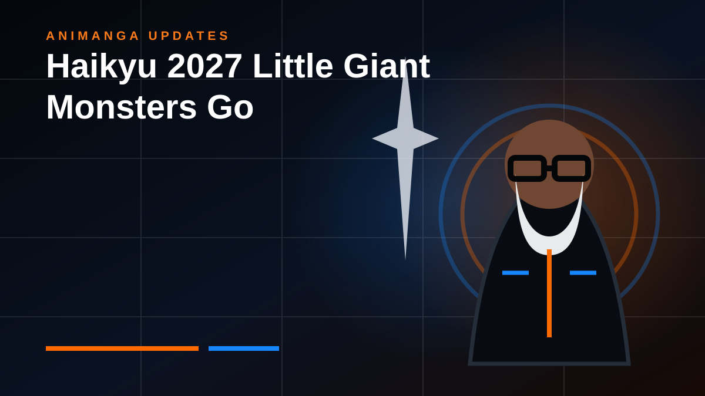

ANIME NEWS · AUGUST 19, 2026
Haikyu!! Sets Up Two Very Different 2027 Battles
A new VS The Little Giant visual puts Hinata and Hoshiumi on a collision course while the Where the Monsters Go action preview turns Bokuto versus Kiryu into a second showcase.

Haikyu!! is building its 2027 return around two matchups that attack the series from different angles.
The new VS The Little Giant visual centers the long-awaited clash between Shoyo Hinata and Korai Hoshiumi. Both players challenge the old assumption that height defines what a volleyball ace can be, but they arrive at that answer through different styles, personalities and paths.
Hinata finally meets the mirror
For most of the story, “the Little Giant” has functioned as an idea hanging over Hinata’s development. Hoshiumi turns that idea into a living opponent. He is not simply another undersized player. He represents a version of the complete athlete Hinata has spent years trying to become.
That makes their showdown more than another tournament obstacle. It is a test of what Hinata’s identity looks like after growing beyond imitation.
Where the Monsters Go gives the power players their stage
The companion Where the Monsters Go action preview shifts the spotlight to Bokuto and Kiryu. Where Hinata versus Hoshiumi is built around speed, adaptation and the meaning of the Little Giant label, Bokuto versus Kiryu promises a more direct collision between elite attackers.
Putting both projects side by side is a smart reminder of what made Haikyu!! work for so long. The series can make radically different styles of volleyball feel equally important because the drama comes from who the players are, not simply from which team has the bigger star.
Why this matters
The 2027 slate now has two clear emotional anchors rather than one vague promise of “more Haikyu.” One story follows Hinata confronting a player who reflects his own limitations and possibilities. The other gives two established monsters room to explode.
That is a stronger way to sell the next chapter: not just as a continuation, but as a pair of character-driven matchups with very different reasons to watch.
RogueVerse status: 2027 return coverage. This page restores the permanent article destination linked from the AniManga Updates feed.